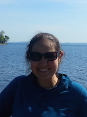
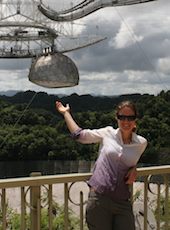

LunGradCon: Conference Organizers
The Organizing Committee is comprised of grad students from a variety of institutions and areas of research.
Email the conference organizers.
-
Evan Thomas, University of Colorado Boulder
Back to top
Evan is a graduate student at the University of Colorado where he studies meteor ablation. He runs laboratory experiments using a dust accelerator to measure the plasma and light production of dust ablating in atmospheric gases. He enjoys the mountains and the Colorado sunshine.
-
Marcus Piquette, University of Colorado Boulder
Back to top
Marcus is a fourth-year graduate student in the Astrophysical and Planetary Sciences department at the University of Colorado, Boulder. He works with Mihály Horányi on data analysis from the Student Dust Counter aboard the New Horizons spacecraft to Pluto.
-
Katherine Shirley, SUNY Stony Brook
Back to topKatherine is a third-year graduate student within the Geosciences Department at Stony Brook University working with Dr. Tim Glotch. Her research focuses on spectroscopy of airless bodies primarily on the Moon, but with applications to other bodies within the solar system.
-
Alessondra Springmann, University of Arizona
Back to topAlessondra is a second-year graduate student in the Lunar & Planetary Laboratory the University of Arizona. She is interested in volatile elements and species in asteroids and comets, thermal release of volatile/labile elements in carbonaceous chondrites, volatile element behavior in Jupiter-family comets, with applications to asteroid and comet sample return missions, asteroid mining, and solar nebula condensation processes.